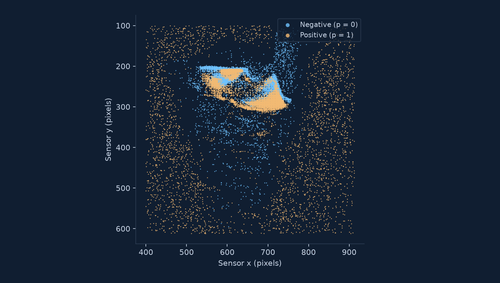
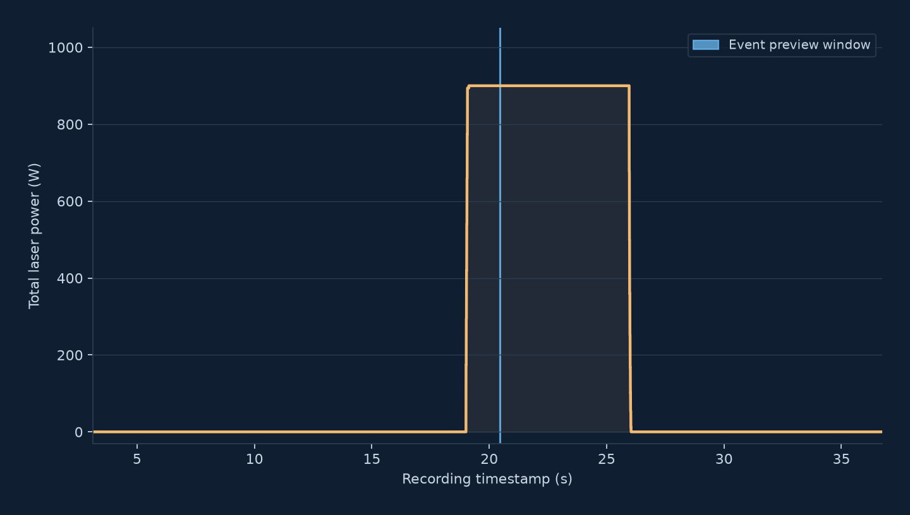
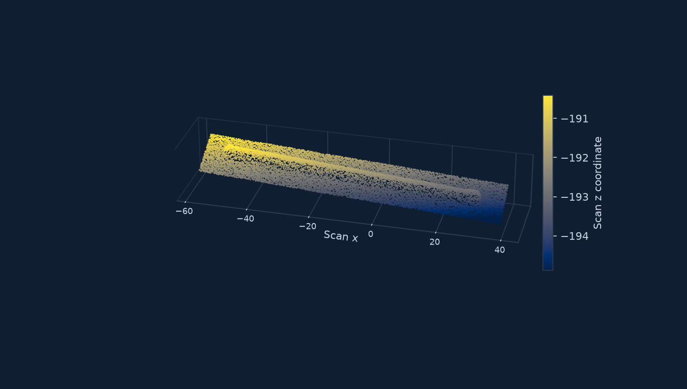

01 IN SITU
Event stream
Asynchronous brightness-change events with microsecond timestamps, pixel coordinates, and polarity.
event.csv t · x · y · p
OPEN DATASET · XI’AN JIAOTONG UNIVERSITY
Seeing melt-pool dynamics,
event by event.
Event-camera observations, process parameters, and 3D track scans from laser wire directed energy deposition (LW-DED).
Hosted on Hugging Face MIT license in dataset metadata

01 / OVERVIEW
XJTU-MPE brings together three views of the same single-track deposition experiment: asynchronous visual events around the melt pool, aligned process-parameter records, and the final deposited-track point cloud.
The dataset supports research on melt-pool dynamics, process-conditioned event forecasting, and the relationship between in situ observations and deposited-track geometry. Its 60 recordings cover constant-power operation and controlled increases and decreases in laser power.
Read the full dataset cardAsynchronous brightness-change events with microsecond timestamps, pixel coordinates, and polarity.
Laser power, feed channels, and axis velocities sampled at 500 Hz and aligned to the event time axis.
Deposited-track geometry in a point cloud, for studying the outcome of the manufacturing process.
02 / DATASET
Study: six independent repetitions per condition.
24 constant-power and 36 time-varying recordings.
The study describes 60 acquired recordings. The current Hugging Face file tree provides recording 1 for each of the 10 conditions. Release inventory checked on October 10, 2026.
| Directory | Total power | Regime | In study | Released |
|---|---|---|---|---|
| 900W | 900 W | Constant | 6 | 1 |
| 1000W | 1000 W | Constant | 6 | 1 |
| 1100W | 1100 W | Constant | 6 | 1 |
| 1200W | 1200 W | Constant | 6 | 1 |
| 900-1100W | 900 → 1100 W | Increase | 6 | 1 |
| 900-1200W | 900 → 1200 W | Increase | 6 | 1 |
| 1000-1200W | 1000 → 1200 W | Increase | 6 | 1 |
| 1100-900W | 1100 → 900 W | Decrease | 6 | 1 |
| 1200-900W | 1200 → 900 W | Decrease | 6 | 1 |
| 1200-1000W | 1200 → 1000 W | Decrease | 6 | 1 |
10 conditions · 60 in study · 10 releasedDirectory names use total power in watts.
A directory such as 900-1200W denotes a transition from 900 W to 1200 W. Recording IDs are local to each condition; they do not specify a train, validation, or test split.
03 / EXPLORE
Actual events accumulated at 20.460428–20.470428 s on the recording time axis. Blue: negative polarity; amber: positive polarity. The view uses original sensor pixel coordinates.

All 16,801 parameter samples from this recording. Controller laser-power values are multiplied by six to express total watts. The blue marker identifies the event preview window.

Every 40th point from the 816,525-point scan, colored by the original z coordinate. This is a scan visualization; substrate-plane fitting and spatial registration are needed for track-height analysis.
04 / GET STARTED
Open files. Documented channels.
Start with a single recording.
Browse all 10 conditions and download raw recording files.
ahqiutkp / XJTU-MPE IMPLEMENTATIONProcess-conditioned diffusion for forecasting future event sequences.
aaahqiu / EventDiff DOCUMENTATIONAcquisition details, timestamp alignment, file formats, and usage notes.
README.md on Hugging Face# pip install huggingface_hub
from huggingface_hub import snapshot_download
snapshot_download(
repo_id="ahqiutkp/XJTU-MPE",
repo_type="dataset",
allow_patterns=["README.md", "data/900W/1/*"],
local_dir="XJTU-MPE",
)This example downloads one recording. Remove allow_patterns to download the full dataset. Hub download guide ↗
# pip install pandas numpy
from pathlib import Path
import numpy as np
import pandas as pd
root = Path("XJTU-MPE/data/900W/1")
events = pd.read_csv(root / "event.csv", nrows=100_000)
events["p_signed"] = events["p"].astype("int8") * 2 - 1
params = pd.read_csv(root / "para.csv",
encoding="utf-8-sig", skiprows=[1])
params["power_total_W"] = params["laser_power"] * 6
xyz = np.loadtxt(root / "3dscan.asc", usecols=(0, 1, 2))Read a bounded event sample first. For large event files, use pandas chunksize to iterate without loading the entire stream.
XJTU-MPE/
└── data/
└── <condition>/
└── <recording_id>/
├── event.csv
├── para.csv
└── 3dscan.ascIdentify a recording with the pair (condition, recording_id).
Convert polarity to a signed integer before mapping it. The dataset card describes the distributed CSVs as retaining original coordinates and timestamps, without voxel conversion.
UTF-8 with BOM. Skip the second row of source type labels. Some values are fractional despite the INT32 metadata labels.
The scan does not provide per-event height labels. Geometric analysis requires a substrate reference plane, track-direction extraction, and registration to the process timeline.
Process timestamps were shifted onto the event time axis by matching laser onset to an onset estimated from event density with 2,000 µs bins. Samples are retained without interpolation or temporal cropping. Timestamp zero need not be the start of deposition, and absolute timestamps should not be compared across recordings.
05 / RELATED RESEARCH
EventDiff conditions a diffusion model on a short event history and an aligned laser-power curve to generate future event frames.
View on GitHub06 / CITATION
If you use XJTU-MPE in your research, please cite the accompanying manuscript.
Process-Conditioned Diffusion for Forecasting Melt-Pool Dynamics via Event-based Sensing in Laser Wire Directed Energy Deposition
Provisional manuscript citation, 2026. A publication venue, DOI, and public manuscript link will be added when available.
@unpublished{tan2026processconditioned,
title = {Process-Conditioned Diffusion for
Forecasting Melt-Pool Dynamics via Event-based
Sensing in Laser Wire Directed Energy Deposition},
author = {Tan, Kunpeng and Yang, Ao and
Zhang, Huaqing and Yuan, Runze and Wang, Chenxi
and Zhang, Xingwu and Zhao, Zhibin},
year = {2026},
note = {Manuscript}
}